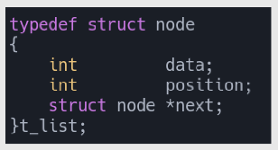
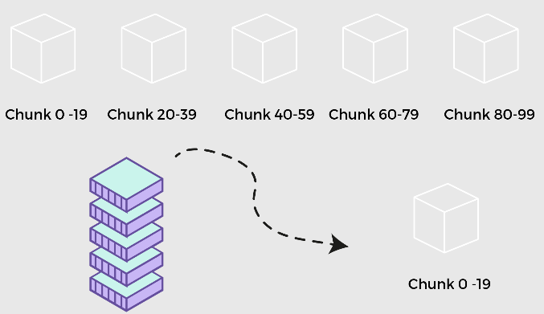
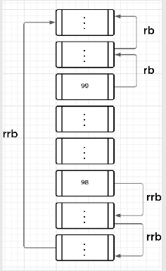

The Push Swap project is designed to sort a stack of integers using the smallest number of actions in the least possible time. It involves two stacks: Stack A (input stack) and Stack B (temporary stack).
This project demonstrates efficient stack manipulation techniques and teaches fundamental sorting concepts critical for algorithm design.
./push_swap "4 67 3 87 23"
- Optimize sorting algorithms.
- Focus on minimizing actions.
- Learn efficient stack manipulation techniques.
This project teaches optimized data sorting using linked lists for better performance compared to arrays. It explores efficient algorithms for managing stacks with different sizes.
The vision is to ensure developers understand advanced data manipulation and sorting techniques in real-world scenarios.
typedef struct s_node { int value; struct s_node *next; } t_node;
- Use linked lists for stack implementation.
- Sort with minimal actions.
- Focus on algorithmic efficiency.
For stacks with 5 or fewer elements, apply specific logic to minimize actions:
- 1 Element: No actions needed.
- 2 Elements: Swap if not sorted.
- 3 Elements: Compare and rotate positions.
- 4 or 5 Elements: Push smallest elements to Stack B, sort Stack A, then push elements back.
if (stack_size == 3) sort_three(stack_a);
Visualizing these operations helps in understanding the actions required for minimal sorting.
For stacks with 200 or more elements, divide them into smaller chunks for efficient sorting. For example:
- Divide a 100-element stack into 5 chunks.
- Push chunk elements to Stack B.
- Sort and push back to Stack A.
chunk_size = stack_size / 5;
Using smaller chunks reduces the complexity of sorting. Each chunk is sorted independently, reducing the required number of steps.
In larger stacks, increase the number of chunks to ensure fewer elements per chunk for manageable sorting. Divide into 10 chunks for stacks over 200 elements.
if (stack_size > 200) chunk_size = stack_size / 10;
- Find the largest and second-largest numbers in Stack B.
- Push them back to Stack A in order.
- Repeat until fully sorted.
Implementing this process ensures optimal sorting with minimal operations.
The efficiency of Push Swap heavily depends on the chosen algorithm. Below are key considerations for optimization:
- Minimize the number of push and rotate operations.
- Use efficient data structures (e.g., linked lists).
- Profile and test with large datasets to ensure scalability.
optimize_actions(stack_a, stack_b);
Always evaluate edge cases, such as already sorted stacks or repetitive numbers, to avoid unnecessary operations.